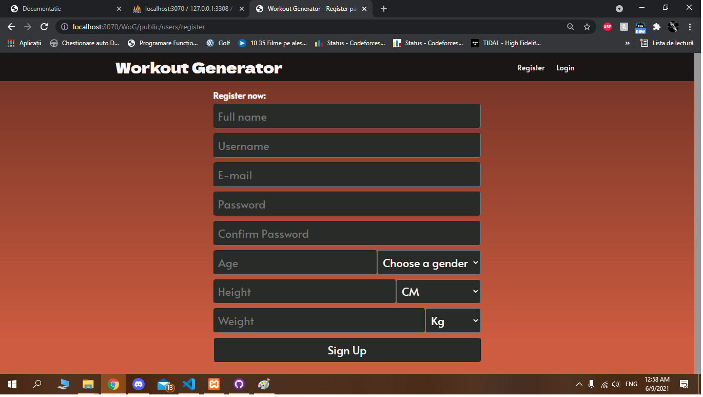
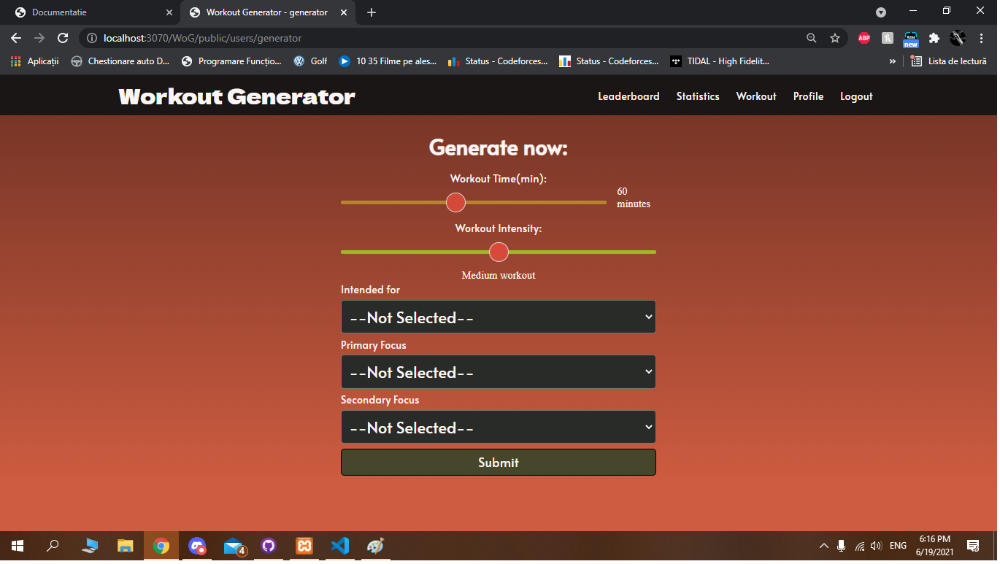

Site usage and flow of work
Pagina principala

In momentul in care utilizatorul intra pe site, acesta este intampinat de pagina principala ce afiseaza un meniu in partea de sus, un motto specific in partea stanga si in partea dreapta un panou cu topul celor mai activi utilizatori. Meniul prezinta in partea stanga un buton cu logo-ul nostru. prin apasarea lui, utilizatorul este adus la pagina principala. In partea dreapta, se afla 2 butoane ce duc utilizatorul spre formularele de logare si inregistrare de pe site.
Pagina de logare

In momentul in care utilizatorul apasa butonul "Login" aflat in partea dreapta a meniului, acesta este redirectionat spre pagina de logare, pentru completarea sunt necesare adresa de email si parola pentru logare.
Pagina de inregistrare
In momentul in care utilizatorul acceseaza link-ul spre pagina de inregistrare aflat in partea dreapta a meniului, acesta este redirectionat spre pagina unde sunt necesare adresa de email cat si alte date cu caracter personal(inaltime, greutate, varsta, numele - ce se vor gasi pe pagina principala in vecinatatea butonului de generare) in vederea inregistrarii pe site.
Dashboard

Dupa ce utilizatorul s-a logat, acesta este intampinat de o noua fereastra in partea dreapta ce ii permite sa vada ce date sunt in profilul sau actual dar si un buton de "Generare" ce il trimite spre un formular de generare a unui program de antrenament.
Error 404 page

Daca utilizatorul intra pe o pagina ce nu se regaseste pe site, acesta este intampinat de pagina de eroare 404. Am implamantat pe aceasta pagina un mic joc de "Workout" simipar cu jocul clasic cu dinozaurul de pe Chrome (aici scopul este de asemenea, sa apesi "spacebar" pentru a aduna puncte).
Pagina Generare
La pagina de generare, utilizatorul este intampiat de un formular unde trebuie inroduse niste preferinte in vederea generarii unui program de antrenament. Dupa ce este realizat acest pas, algoritmul genereaza un antrenament in mod determinist.
Pagina Profil
Pagina de profil ofera utilizatorului un tabel unde poate sa isi acceseze antrenamentele ce nu sunt terminate si sa vada ce antrenamente a avut in trecut si le-a terminat. de asemenea, cand un antrenament este terminat, utilizatorul primeste un punctaj ce se adauga la scor pentru clasament.
Pagina Setari

Pagina de setari prezinta utilizatorului un formular unde ii sunt incarcate datele trimise in momentul inregistrarii. Acest formular ofera posibiltatea de a modifica acele date intr-un mod simplu si rapid.